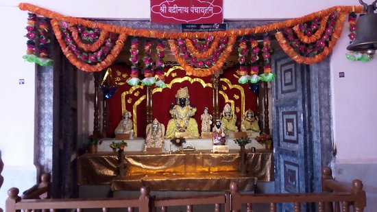
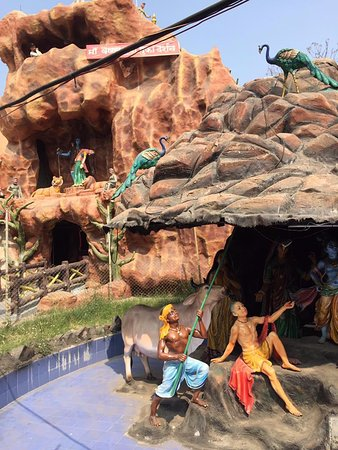
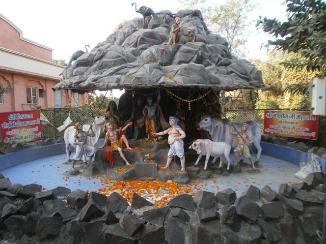

यह आधुनिक मंदिर श्री हरसिद्धिदेवी मंदिर की दक्षिण दिशा में स्थित है।
स्वामी शांतिस्वरूपानंदजी तथा युगपुरुष स्वामी परमानंदजी महाराज के सद्प्रयत्नों से इस मंदिर की स्थापना अखंड आश्रम परिसर में हुई।

स्मरण रहे कि श्री द्वारकाधाम एवं श्री जगन्नाथ धाम की सन् 1997 में तथा श्री रामेश्वरधाम की सन् 1999 में प्राण-प्रतिष्ठा हुई थी,
जबकि चौथे धाम श्री बद्रीविशाल की प्राण-प्रतिष्ठा सन् 2001 में हुई है।

उक्त प्रतिमाओं की विशेषता यह है कि इन्हें स्वाभाविक मूल स्वरूप ही प्रदान किया गया ताकि दर्शनार्थियों को यथार्थ दर्शन के लाभ प्राप्त हो सकें।
एक ही परिसर में चारों धामों के दर्शन को प्राप्त करना प्राय: दुर्लभ संयोग ही होता है।

इस परिसर के प्रवेश द्वार पर ही एक सुंदर बगीचा है एवं इसके पार्श्वभाग में संत निवास तथा साधना कक्ष स्थित है।
यहां पर समय-समय पर संत-महात्माओं के प्रवचन एवं सत्संग आदि कार्यक्रम आयोजित होते रहते हैं।
यह मंदिर कॉम्प्लेक्स अपनी विशिष्ट शैली का एक अनूठा उदाहरण है।